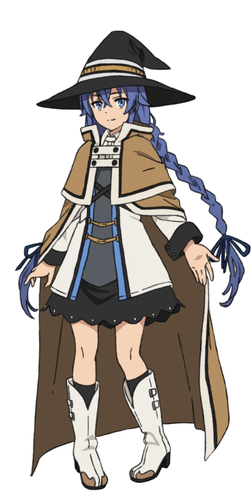

Knowledge is power. And the best knowledge deepens when passed to others. This backend course, like Roxy's teachings, thoroughly explores every concept and builds practical skills that last a lifetime.
From database normalization to system design interviews — indexing, N+1, ACID, REST APIs, caching, scalability, security — every topic is taught with clarity and purpose. You will not just memorize; you will understand.
Each lesson includes real hands-on tasks, interactive quizzes, and interview practice. No prior mastery required — only the willingness to learn.